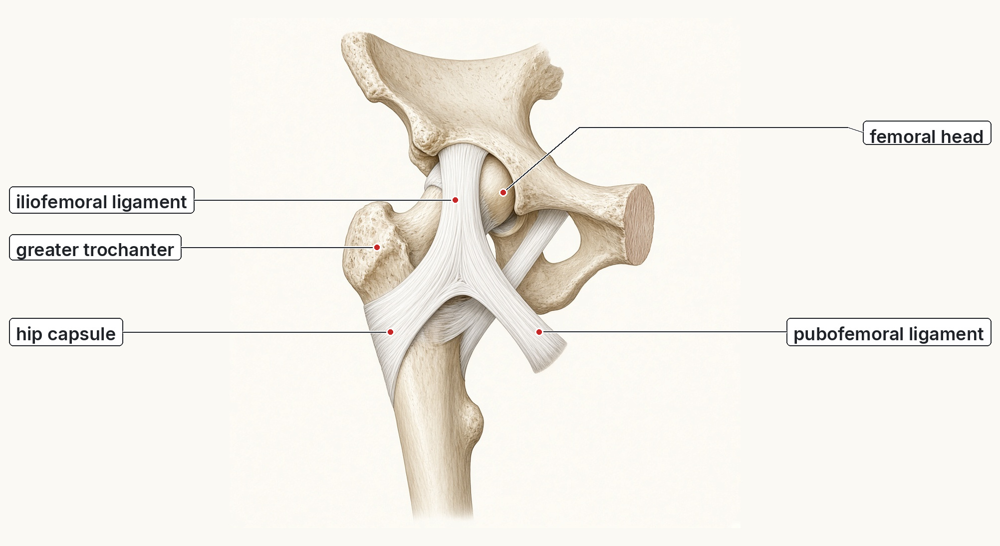
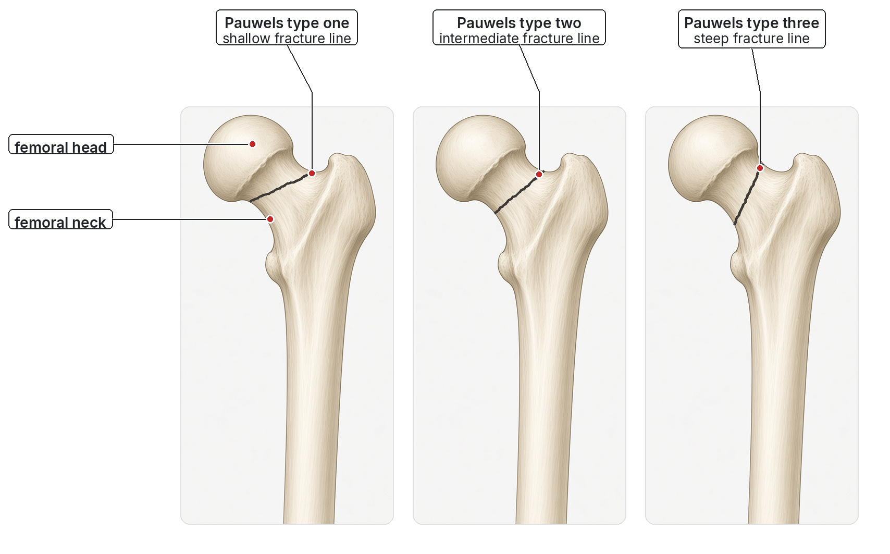

Pauwels classification of femoral neck fractures, a guided walkthrough
Step 1 · The patient
This is the usual story for an older adult: a fall from standing height, then a neck fracture. The neck sits inside the hip capsule, so the break is intracapsular. The head’s blood vessels run along that neck. Displacement can kink them. That blood-supply worry is real, and it is a different question from the one Pauwels asks.
Step 2 · Why the angle matters
Stand up, and body weight comes down through the femoral head into the neck. The muscles on the greater trochanter pull the other way. The combined load runs roughly along the neck. The fracture line meets that load at an angle.
- Shallow line (closer to horizontal): the load meets the crack nearly face-on. The pieces are pressed together. That is compression. A flat roof tile sits where you put it.
- Steep line (closer to vertical): the same load runs almost along the crack. The head wants to slide down the slope. That is shear. A steep roof tile slides off.
Step 3 · The sleeve around the neck
The femoral neck lives inside a fibrous sleeve, the hip capsule. Two ligaments thicken the front of that sleeve in the drawing below. This is a right hip, seen from the front. The ball is the femoral head. The bony bump on the outer side is the greater trochanter.
- Iliofemoral ligament: the strong front band, shaped like an upside-down Y. It runs from the ilium down onto the femur and checks the hip from being shoved too far into extension.
- Pubofemoral ligament: a separate band, lower down, on the pubic side. It checks too much abduction.
- Hip capsule: the broader sleeve wrapped around the base of the neck. On a real hip the front of this sleeve reaches the intertrochanteric line, so a crack in the middle of the neck is inside the capsule.

The vessels that feed the femoral head climb the neck inside this sleeve. A displaced neck fracture can kink them. That is the blood-supply story from the proximal-femur map. Pauwels does not reclassify the blood supply. It only tells you the slope of the crack inside the sleeve.
Step 4 · Muscle forces, in words
A separate drawing of the muscles around the hip was reviewed and set aside, so this step stays in words. The diagrams already in the hip lessons are unchanged.
Two pulls set up the load that Pauwels is about. Body weight comes down on the femoral head. The abductors that hold the greater trochanter — gluteus medius and gluteus minimus — pull upward and outward. Together those forces press along the neck. A fracture line across that press is squeezed. A fracture line nearly parallel to it is sheared.
If the neck breaks and the pieces separate, the head stays in the socket and the shaft is what moves. That is why the leg looks short and rolled outward. Muscles that attach on the shaft side of the break, including iliopsoas on the lesser trochanter, help tug the shaft. You do not need a muscle plate to grade the angle. You need the direction of the load relative to the crack.
Step 5 · The three Pauwels types
Look at the fracture line on an anteroposterior view and judge its angle to the horizontal. Classic teaching uses three bands. They are “about” bands, not a protractor result to the single degree.
| Type | Angle to the horizontal | What the load does |
|---|---|---|
| Type I | Under about 30° | Shallow. Mostly compression. The pieces are pressed together. |
| Type II | About 30–50° | Intermediate. McRae: most fragility neck fractures are this type, and it is relatively stable. |
| Type III | Over about 50° | Steep. Mostly shear. McRae draws this near 70°. Young high-energy fractures are often this vertical. |

Step 6 · This is not Garden
Garden (lecture page 14; McRae book pages 353–354) asks how far the pieces moved, on the anteroposterior film.
- Garden I: valgus impacted.
- Garden II: complete, but undisplaced.
- Garden III: partly displaced.
- Garden IV: fully displaced.
McRae’s practical merge: I–II undisplaced, III–IV displaced. Splitting all four grades reliably is neither always possible nor very useful. What changes care is whether the neck is displaced, because displacement threatens the vessels on the neck. Posterior tilt on the lateral film is a separate caution: tilt over about 10° is treated as displaced, though there is no firm consensus.
Pauwels (lecture page 13) asks a different question: how steep is the line, and therefore how keen is it to slide? Lecture page 15 also shows an AO/OTA code for these fractures. That code does not replace Pauwels.
Step 7 · What the slope means for fixation
Steeper means more shear, and shear is harder for a simple screw pattern to hold. The head keeps wanting to slide down the slope, and the screws are asked to resist that slide.
McRae (book page 354) puts it this way. Types 1 and 2 are relatively stable and can be fixed with screws. Type 3 is subject to shear and may be better held with an angle-stable device such as a dynamic hip screw. Young adults after high-energy injury are the usual home of that vertical type 3 line. Most fragility fractures are type 2.
Optional · Practise with worked examples
Case 1: An 82-year-old after a kitchen fall. The neck line sits about 40° to the horizontal. The head is still undisplaced (Garden II).
Case 2: A 26-year-old after a motorbike crash. The neck line is nearly vertical, about 70°.
Case 3: A 78-year-old who managed a few steps. The neck is valgus impacted, and the line is under 30°.
Sources
Lecture 7, Injuries of the hip and femur, pages 13–15 (Pauwels on page 13, Garden on page 14, AO/OTA on page 15). The bedside picture of the standing-height fall is the same lecture, pages 11–12. McRae’s Orthopaedic Trauma and Emergency Fracture Management, 3rd edition (White, Mackenzie, Gray, 2016), chapter 17 Hip fractures, book pages 353–354, including Fig. 17.7. Teaching by MedLearn. The two plates are AI teaching illustrations, labelled and checked by MedLearn. The compression-and-shear sketch is an original MedLearn drawing.